Cut action to the beat, not cuts to the beat
Music-video structure starts from lyrics and sections: verse establishes space, chorus gives a repeatable motif, bridge changes relationship or location. Each section carries one job; do not tell the story and show off in the same section.
Import the track, mark section boundaries, then place shots. Shot length comes from the action, not “cut every two seconds.”
Limits
The image should not explain the lyric. “Leaving” does not require a door; a ticket in a hand may be more specific.
On set
Mark verse, chorus, and bridge times. Use long takes in the verse to build space; in the chorus cut a remembered action every four beats.
Music video: the track is the timeline

Do this
An MV follows the song: verse gives space, chorus gives a memory hook, bridge turns.
- Mark verse, chorus, and bridge times.
- Use long takes in the verse to establish space.
- Cut to a memory action every four beats in the chorus.
Avoid
Do not illustrate every lyric; that is a slideshow, not an MV.
Image note. Covers, diagrams and step images on this page are editorial illustrations or structure diagrams, not photographs of a test performed here; they are not evidence of measured gear performance. Where an image is AI-assisted, the caption says so. Read the test conditions in the text before treating an image as proof.